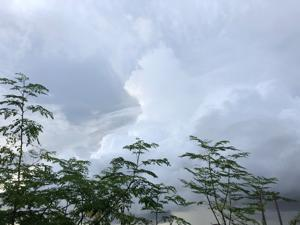
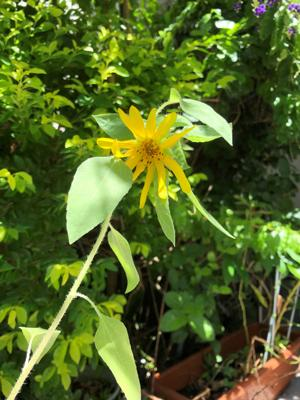

うるがいの話 ある日
最新: ひまわり【うるがいの話 ある日】とは 一日だけのプログです
『うるがいの話』の最新一日だけのプログで、通信料が少なく経済的だ。カニの画像をクリックすると全ての日付が載る『うるがいの話』サイトを表示します
|
|
【うるがいの話】 うるがい(ｳﾙｶﾞｲ urugai)とは、『もずくがに』の名前でとても大きくなります。 |
|---|---|
|
|
【カミマヤーの話】 猫のことを方言でマヤーといいます。カミマヤー（kamimayaa）とは、神の猫のことです。 |
|
【たながぁの音楽】 たながぁ（ﾀﾅｶﾞｰ tanagaa）とは手長えびのことで、何種類かあり大きいのは車 エビぐらいになります。 |

|
【ぶながぁの話】 ぶながぁ(ﾌﾞﾅｶﾞｰ bunagaa)とは、赤い髪の毛、赤い身体、そして身長は１ｍ２０ｃｍ ぐらい、川の蟹を食べているの目撃された。場所は沖縄県国頭郡大宜味村のと ある村僕の隣近所に住んでいる爺さんから、聞いた話です。 |
|
|
【ギーマの話】 ギーマ(giima)とは、山原の里山に咲くスズランに似た、 花を付けます。実は食べられます、 気が付くと口の周りが紫になっています。 |
2022年08月18日 (木）ひまわり
17:37

何度も種を植えてはカタツムリに食べられ、ベランダでかろうじてモヤシのよ
うに枯れずに済んだ貴重なヒマワリの、小さな小さな花が咲いた。うーんヒマ
ワリみたくないが。高校時代にテレビでみた映画『ひまわり』を観た。高校の
時は涙を流した覚えがあるが、ソフィア・ローレンの演じる女性はクセが強く
優柔不断なマルチェロ・マストロヤンニ役にウンザリしてしまって涙は出なか
った。解像度がいいテレビでみたのでソフィア・ローレンの眉が、ギザギザな
ので可笑しかった。 
昼過ぎ、子供がから熱が３９度、熱さましイブを飲んでも下がらない、咳がで
ている、解熱剤とカゼ薬と食べ物を持ってきて！と連絡があった。お、これは
明らかにコロナかと、抗原検査キットもあるけどいる？、鼻と唾液があるけど
どっちがいいと言うと唾液がいいと言われ病院から調達した解熱剤や食べ物な
どをアパートに持っていく。しばらくして抗原検査キットでは陰性だったと連
絡があった。ふむふむ、少し安心する。このまえからのドタバタで求職活動が
出来ず、今月は給付金が貰えないという、辛い。
１７時３２分 ビットコインの総資産 ￥９、１６３↓